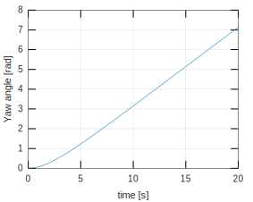

Defining parameters
% Choosing tire TireModel = TirePacejka(); % Choosing vehicle System = VehicleSimpleNonlinear4DOF(); % Defining vehicle parameters System.mF0 = 700; System.mR0 = 600; System.lT = 3.5; System.nF = 1; System.nR = 1; System.wT = 2; System.muy = 1; System.deltaf = 10*pi/180; System.FXFRONTLEFT = 0; System.FXFRONTRIGHT = 0; System.FXREARLEFT = @VelControl4DOF; System.FXREARRIGHT = @VelControl4DOF; System.K = 50000000; % Torcional stiffness System.C = 5000000; System.H = 0.6; % CG height [m] System.L = 0.6; % track [m] System.IXX = 12000; System.IYY = 65000; System.IZZ = 65000; System.IXY = 1000; System.IXZ = 1000; System.IYZ = 1000; System.tire = TireModel; % Choosing simulation T = 20; % Total simulation time [s] resol = 200; % Resolution TSPAN = 0:T/resol:T; % Time span [s] simulator = Simulator(System, TSPAN); simulator.V0 = 8;
Run simulation
simulator.Simulate();
Results
% Retrieving states XT = simulator.XT; YT = simulator.YT; PSI = simulator.PSI; THETA = simulator.THETA; VEL = simulator.VEL; ALPHAT = simulator.ALPHAT; dPSI = simulator.dPSI; dTHETA = simulator.dTHETA; % Retrieving data from vehicle m = System.mT; a = System.a; b = System.b; K = 50000000; % Torcional stiffness of the sprung mass CC = 5000000; h = 0.6; % CG height [m] l = 0.6; % track [m] g = 9.81; FzRight = (m*g*l/2 + K*THETA + CC*dTHETA)/l; FzLeft = m*g - FzRight; FzFrontRight = FzRight*b/(a+b); FzFrontLeft = FzLeft*b/(a+b); FzRearRight = FzRight*a/(a+b); FzRearLeft = FzLeft*a/(a+b); f1 = figure(1); hold on ; grid on ; box on plot(TSPAN,XT) xlabel('time [s]') ylabel('Distance in the x direction [m]')

f2 = figure(2); hold on ; grid on ; box on plot(TSPAN,YT) xlabel('time [s]') ylabel('Distance in the y direction [m]')
f3 = figure(3); hold on ; grid on ; box on plot(TSPAN,PSI) xlabel('time [s]') ylabel('Yaw angle [rad]')
f4 = figure(4); hold on ; grid on ; box on plot(TSPAN,THETA) xlabel('time [s]') ylabel('Roll angle [rad]')

f5 = figure(5); hold on ; grid on ; box on plot(TSPAN,VEL) xlabel('time [s]') ylabel('Velocity [m/s]')

f6 = figure(6); hold on ; grid on ; box on plot(TSPAN,ALPHAT) xlabel('time [s]') ylabel('Vehicle slip angle [rad/s]')

f7 = figure(7); hold on ; grid on ; box on plot(TSPAN,dPSI) xlabel('time [s]') ylabel('Yaw rate [rad/s]')

f8 = figure(8); hold on ; grid on ; box on plot(TSPAN,dTHETA) xlabel('time [s]') ylabel('Roll rate [rad/s]')
f9 = figure(9); hold on ; grid on ; box on plot(TSPAN,FzFrontRight,'r') plot(TSPAN,FzRearRight,'g') plot(TSPAN,FzFrontLeft,'b') plot(TSPAN,FzRearLeft,'m') xlabel('time [s]') ylabel('Vertical force [N]') legend('Front Right','Rear Right','Front Left','Rear Left')
f10 = figure(10); hold on ; grid on ; box on plot(TSPAN,FzFrontRight + FzFrontLeft,'r') plot(TSPAN,FzRearRight + FzRearLeft,'g') xlabel('time [s]') ylabel('Vertical force [N]') legend('Front axle','Rear axle')

mF0
disp(num2str(System.mF0))
mR0
disp(num2str(System.mR0))
Frame and animation
g = Graphics(simulator);
g.TractorColor = 'r';
g.Frame();
angulo = 0:0.01:2*pi;
[R,XC,YC] = circfit(XT(40:end),YT(40:end));
XX = XC + R*cos(angulo);
YY = YC + R*sin(angulo);
hold on
plot(XX,YY,'k')
g.Animation();
Maneuver radius
disp(num2str(R))